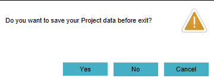
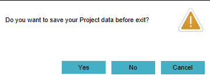

import logging;reload(logging)
FORMAT="%(asctime)-8s %(message)s"
logging.basicConfig(format=FORMAT, filename="test.log", level=logging.DEBUG)
logging.info("[info] Exit an editor session without saving...")
#find("1458822999918.png")
click( )
wait(
)
wait( ,10)
click(Pattern().targetOffset(-6,93))
wait(,10)
click(Pattern().targetOffset(51,49))
#waitVanish("1458823028071.png",120)
waittime = 1
for x in range(0, 120):
if waitVanish(, waittime):
print '[success]Project exit in %d seconds' % (x*waittime)
logging.info('[success]Project exit in %d seconds' % (x*waittime))
break
if exists():
print("[error] Project exit takes too long, exit failed!")
logging.error("[error] Project exit takes too long, exit failed!")
exit(1)
else:
print("[success] Project exit successful!")
logging.info("[success] Project exit successful!")
,10)
click(Pattern().targetOffset(-6,93))
wait(,10)
click(Pattern().targetOffset(51,49))
#waitVanish("1458823028071.png",120)
waittime = 1
for x in range(0, 120):
if waitVanish(, waittime):
print '[success]Project exit in %d seconds' % (x*waittime)
logging.info('[success]Project exit in %d seconds' % (x*waittime))
break
if exists():
print("[error] Project exit takes too long, exit failed!")
logging.error("[error] Project exit takes too long, exit failed!")
exit(1)
else:
print("[success] Project exit successful!")
logging.info("[success] Project exit successful!")